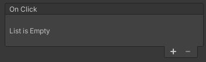
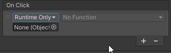
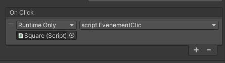

Dans Unity, les événements nous permettent de déclencher des scripts ou encore de modifier des GameObjects facilement lorsqu'ils sont déclenchés. Certains objets contiennent des événements par défaut. Par exemple, les boutons contiennent l'événement On Click, les Image Target contiennent l'événement détection d'image... Dans ce chapitre, nous allons voir les possibilités que créent les événements.
Les événements sont des boîtes qui ressemblent à ceci dans l'inspecteur:
En haut à gauche, on voit le nom de l'événement. Celui-ci nous indique habituellement à quel moment celui-ci sera déclenché. Dans le cas de cette image, c'est lorsqu'on appuie sur un bouton qu'il est déclenché. En bas à droite, le symbole + nous permet d'ajouter une action qui sera déclenchée lorsque l'événement se produit. Lorsqu'on clique sur le +, voici ce qui s'affiche:
Le premier paramètre (Runtime Only) détermine à quel moment notre événement est effectif, on peut sélectionner Jamais, seulement en mode test ou en mode test et en mode Éditeur. Je recommande de conserver Runtime Only (mode test seulement).
La boîte en dessous de Runtime Only est celle qui détermine quel Objet est concerné par l'événement. On doit cliquer-glisser l'objet concerné dans cette boîte. On peut glisser n'importe quel objet de la hierarchy dans cette boîte, ce peut-être l'objet lui-même qu'on glisse ou un autre.
Selon l'objet qu'on glisse dans la boîte Object, la boîte Function aura des paramètres différents qu'on peut affecter. Voici une liste non-exhausitve de ce qu'on peut faire grâce à cette boîte:
- GameObject: Le paramètre SetActive, nous permet d'activer ou désactiver un GameObject lorsque l'événement est déclenché.
- Button: Le paramètre bool enabled nous permet d'activer ou désactiver le clic du bouton. Ainsi, le bouton reste visible, mais on ne peut plus cliquer dessus.
- Animator: La fonction Play (string), nous permet d'écrire le nom de l'animation que nous souhaitons voir jouer. Une fois cette animation jouée, c'est l'animator Controller qui jouera la suivante ou non selon comment il est programmé.
Bien que plusieurs actions soit possibles, la façon la plus efficace de déclencher plusieurs actions grâce à un événement est de créer une fonction dans un script avec ces actions et d'assigner le GameObject sur lequel il est à la boîte Object. Ensuite, dans Function, on doit chercher le nom du script, puis le nom de la fonction à exécuter.
Dans l'image ci-haut, j'ai assigné l'objet Square à l'événement. Ensuite, dans la liste Function, j'ai choisi le script nommé Script, puis j'ai choisi la fonction EvenementClic. Cela signifie que lorsque je clique sur le bouton ma fonction EvenementClic sera exécutée. Je peux passer un paramètre à cette fonction, ce qui pourrait être utile pour détecter quel objet est touché par exemple.
Dans Unity, il est possible d'ajouter un événement à nos GameObjects pour détecter les touches sur lequel le joueur appuie ou les mouvements qu'il fait avec sa souris. Cela nous permet de faire des déclenchements lorsque des modifications sont détectées.